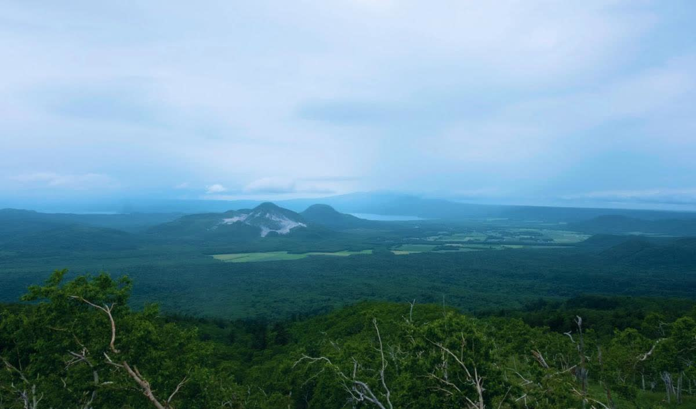
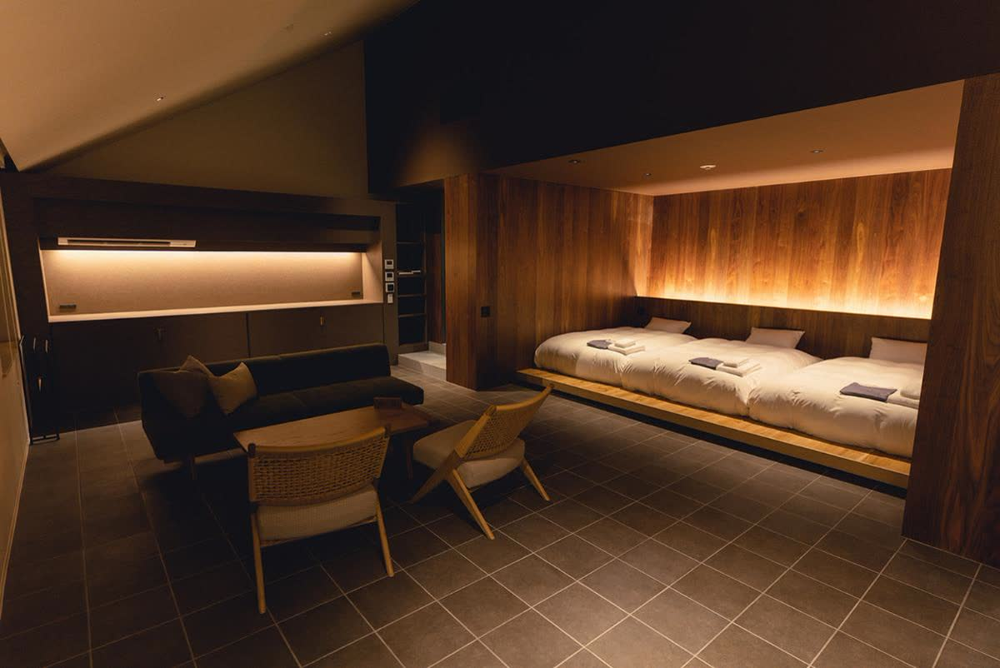
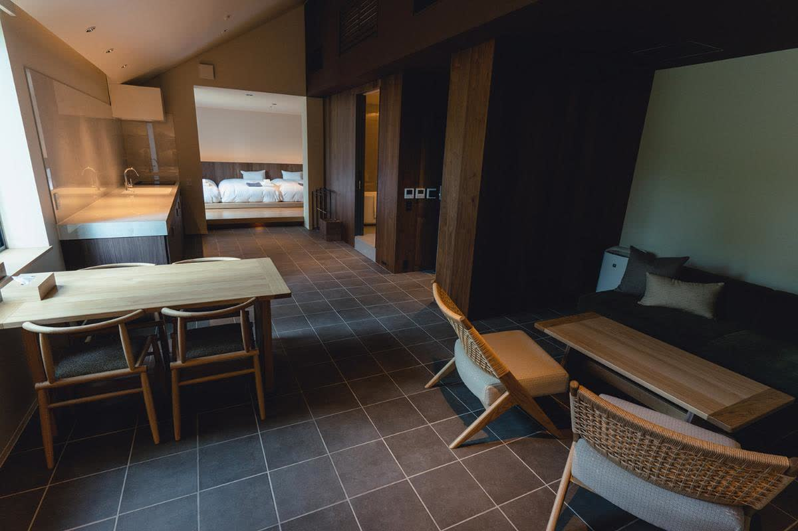
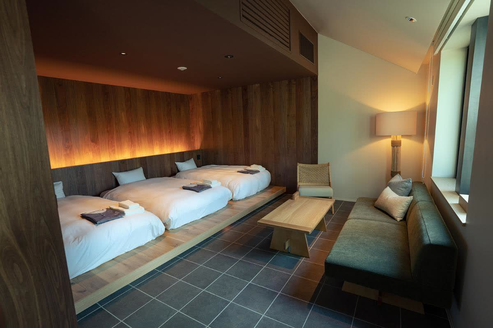
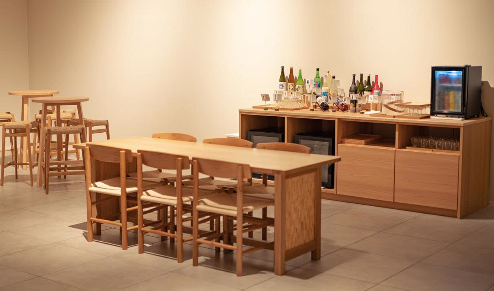
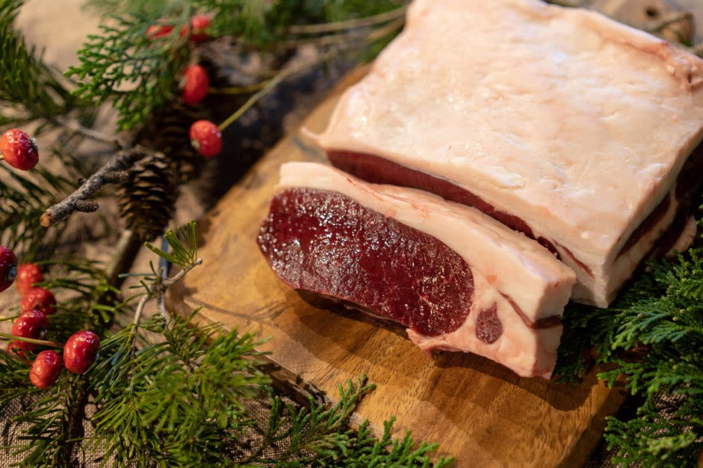
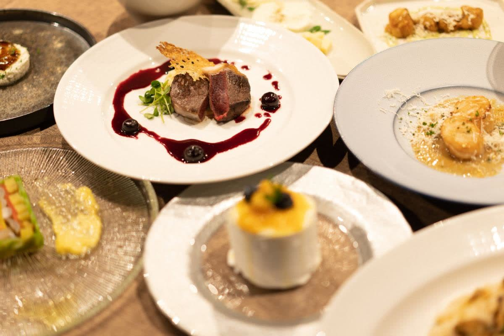
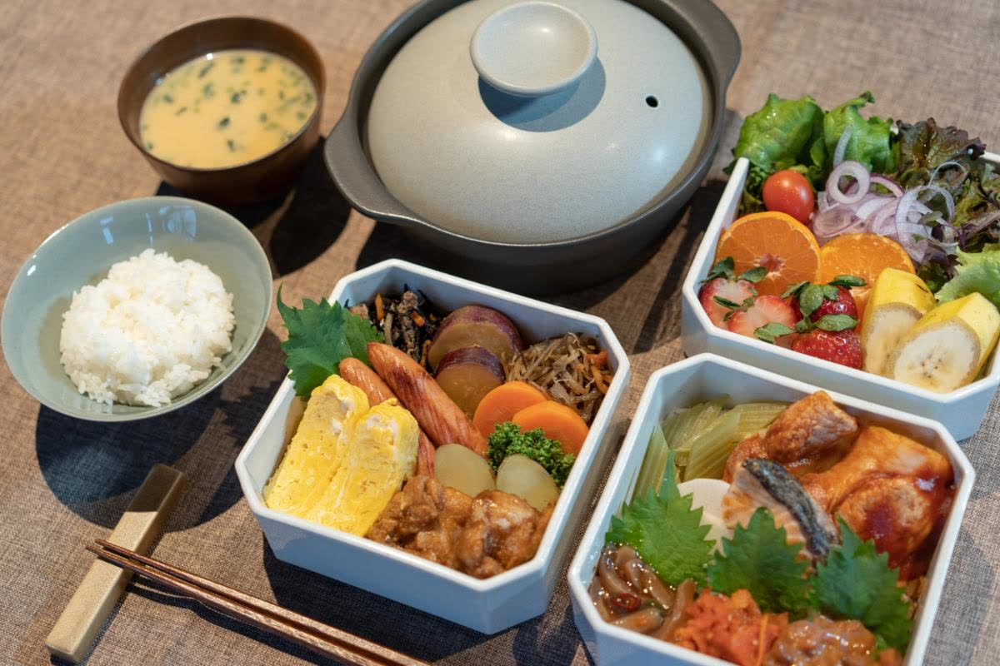
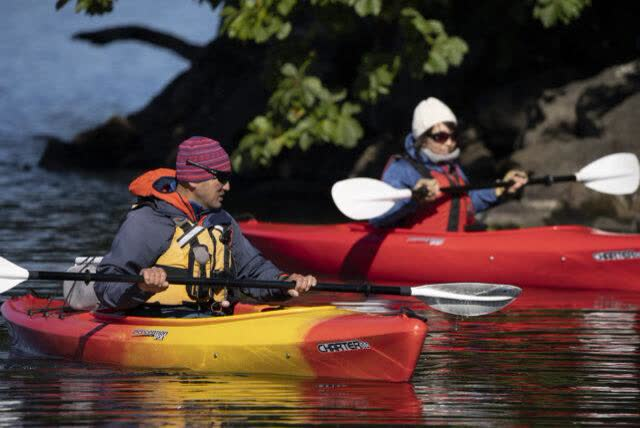
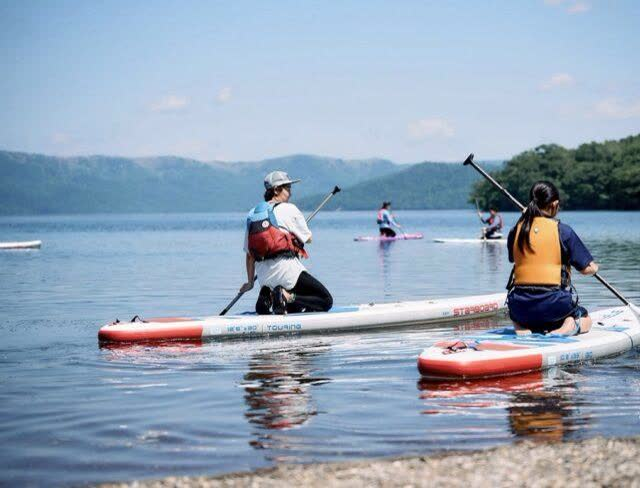

Case Study — Regional Revitalization
摩周湖に最も近いホテルを、
地域の環境文化拠点へ。
弟子屈チャレンジ株式会社 ／ Nature Base Hotel NUPPUKOTTE（旧 レラ摩周）
北海道川上郡弟子屈町
Overview
事例の概要
阿寒摩周国立公園の中、摩周湖の展望台まで約6kmという場所にあるホテルを、Team Energyは2022年に取得しました。地域に根ざすための会社として弟子屈チャレンジ株式会社を設立し、「レラ摩周」として再開。3年かけて運営体制を作り直し、2025年7月に全室スイートの「Nature Base Hotel NUPPUKOTTE」へ全面リニューアルしました。ホテルの再生を起点に、地熱発電をはじめとする地域開発へ広げていく、Team Energyの地域創生モデルの実例です。
- 所在地
- 北海道川上郡弟子屈町弟子屈原野419-64（摩周第一展望台まで約6km）
- 前身
- ピュアフィールド 風曜日（ユニバーサルデザインホテル）
- 取得・再開
- 2022年春、「レラ摩周」として再開
- 通年営業
- 2023年〜
- 全面リニューアル
- 2025年7月、「Nature Base Hotel NUPPUKOTTE」へ
- 施設
- 全7室スイート（46〜99㎡）／最大23名／レストラン24席／ラウンジ
- 運営
- 弟子屈チャレンジ株式会社（Team Energy Growth 傘下）
Timeline
取得から再生までの経緯
-
2012
弟子屈との出会い
代表の中村誠司が、弟子屈町で開かれた「100km歩こうよ大会 in 摩周・屈斜路」に参加。地熱発電に取り組んでいたTeam Energyと、地熱資源を持つ弟子屈町との関係がここから始まります。
-
2022
ホテルを取得し、弟子屈チャレンジを設立
摩周湖に最も近いホテル「ピュアフィールド 風曜日」を取得。地域に根ざすための拠点会社として弟子屈チャレンジ株式会社を設立し、アイヌ語で「風」を意味する「レラ摩周」と名を改めて春に再開しました。アドベンチャートラベルセンターとグランピングを併設し、事業再構築補助金も活用しています。
-
2023
通年営業へ
厳冬期も営業する通年運営に切り替え、樹氷・結氷・タンチョウなど冬の道東を売りにした滞在提案を始めました。
-
2023–24
運営体制をゼロから作り直す
前任の支配人はホテル経営の経験がなく、運営は行き詰まっていました。ホテル勤務の経験はあるものの経営は未経験だった滝川智春氏が運営責任者に就き、グループ経営陣とともにホテルの設計・経営に実績のある専門家を招いて、運営の仕組みと集客戦略を一から構築しました。
-
2025.05
全面改装に着手
建物を全面的に改装。客室をすべて46㎡以上のスイートに作り替え、テレビを置かず自然の音と光を感じる「暮らすように滞在する」設計に改めました。
-
2025.07
Nature Base Hotel NUPPUKOTTE として再出発
アイヌ語で「原野に繋がる」を意味する名前に改め、国立公園の自然と地域文化を暮らすように味わう「環境文化拠点」として開業。法人合宿、富裕層・インバウンド、団体ツアー、貸切イベントの4つの需要に向けた営業を始めています。
Approach
運営再建で取り組んだこと
経営人材を送り込む
後継者や経営人材のいないホテルに、グループから運営責任者を送り、外部の専門家と組んで運営体制を構築しました。承継後に「誰が経営するか」を先に決める、Team Energyの基本の型です。
コンセプトを立て直す
「摩周湖に最も近い」という立地の希少性と、道東の自然を前面に出しました。全室スイート、テレビを置かない設計、連泊向けのエコ清掃など、長期滞在を前提に施設と運営を組み替えています。
食で差をつける
熟練の猟師が捕獲から一貫して手がける「摩周鹿」をメインにした創作コースをレストランの軸に据え、朝食は道東の恵みを詰めたお重を客室へ届ける形にしました。
法人・団体需要を開拓する
企業合宿・ワーケーション、富裕層・インバウンド、団体ツアー、貸切イベントの4つの活用モデルを設計。全館貸切で最大23名、ラウンジをワークスペースとして使える体制にしました。
地域と組む
カヌー・SUP・乗馬・雲海ツアーなどは地元のガイド・事業者を紹介する形にし、摩周湖観光協会の会員として町の観光振興と歩調を合わせています。
ホテルの先に、地域開発を見る
ホテルの再生はゴールではなく起点です。弟子屈町は地熱資源を持つ町であり、Team Energyの地熱発電の知見と結びつけて、雇用と地域活性化につなげる構想を進めています。
Now
現在のホテル。Nature Base Hotel NUPPUKOTTE
客室
All Suites
7室 全室スイート
最大定員
Full-house Capacity
23名（全館貸切時）
アクセス
Airports
3空港（釧路／女満別／中標津）









4つの活用モデル
- 企業合宿・ワーケーション
- ラウンジ貸切のワークタイムと、摩周湖・屈斜路湖でのチームビルディング。全館貸切で1名1室なら最大7名、相部屋で最大23名。
- 富裕層・インバウンド
- 「摩周湖に最も近い」希少性と摩周鹿のガストロノミー。雲海・星空・カヌーのプライベートガイドと組み合わせた道東ラグジュアリー周遊の拠点に。
- 団体ツアー
- バスツアーのランチ立寄り（最大25名）や少人数団体の宿泊。知床・阿寒・釧路湿原を結ぶ行程に組み込めます。
- 貸切イベント・報奨旅行
- 周年行事、表彰旅行、VIP招待。レストラン貸切ディナーと合わせて演出します。
施設・アクセス
- 客室
- コンフォート63㎡×4／エクステンデッド99㎡×2／コンパクト46㎡×1。全室バス・トイレ付、Wi-Fi、POLAアメニティ
- レストラン
- 24席（4名席×4、個室8名席×1）。夕食17:00〜21:00、20名以上で貸切
- 館内
- ラウンジ、コインランドリー、E-BIKEレンタル、駐車場約10台、スマートチェックイン
- 空港から
- 中標津 約60分／女満別 約75分／釧路 約90分。JR摩周駅から約10分
- 対応
- 英語対応スタッフ常駐。ベジタリアン・アレルギーは事前相談
Contact
ホテルへのお問い合わせ
- 施設名
- Nature Base Hotel NUPPUKOTTE
- 運営
- 弟子屈チャレンジ株式会社
- TEL
- 080-6264-6444（担当：滝川）
- info@nuppukotte.com
- WEB
- nuppukotte.com
Team Energy
地域の宿泊施設の承継・再生のご相談
後継者不在の宿泊施設や、地域の中核となる事業の承継について、事業承継の引受先としてご相談をお受けしています。